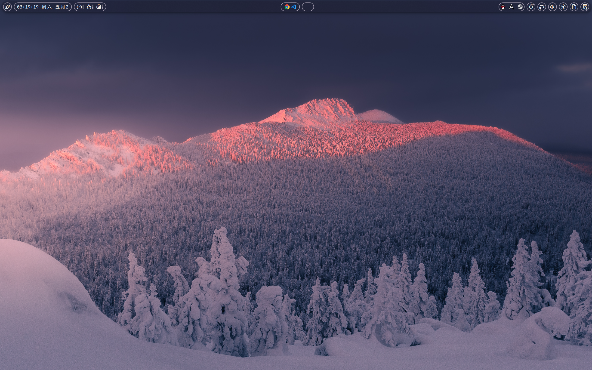
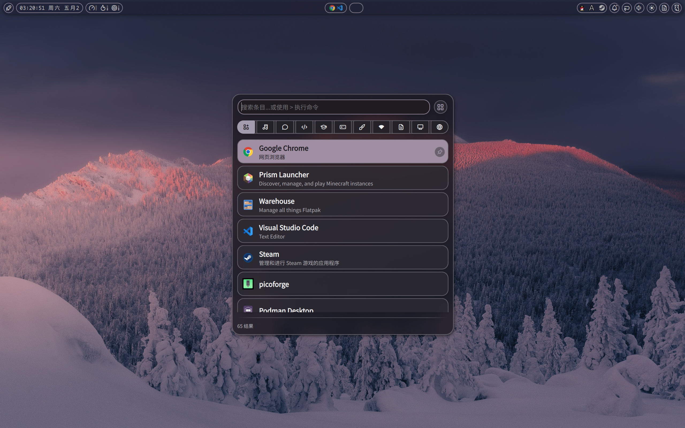
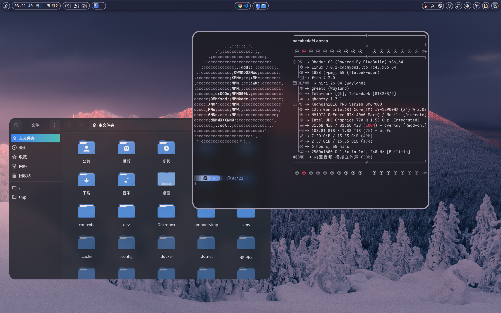
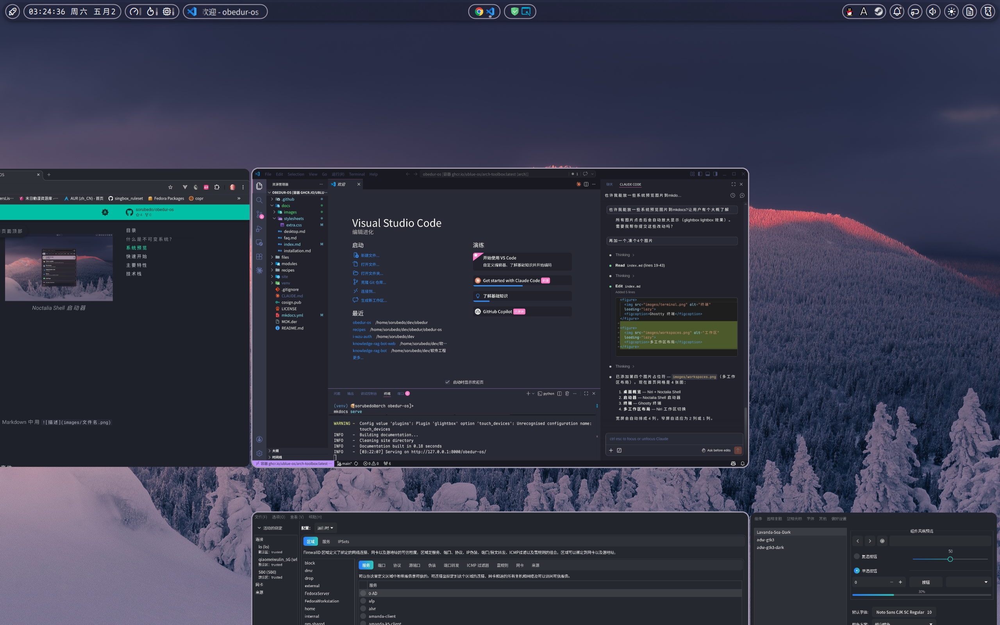

欢迎使用 Obedur-OS
Obedur-OS 是基于 BlueBuild 构建的 Fedora Atomic 不可变系统镜像，提供开箱即用的 Niri 滚动平铺 Wayland 桌面环境。
本系统使用 CachyOS LTO 优化内核，较为激进，要求 CPU 支持 x86_64-v3 指令集（Intel Haswell / AMD Excavator 及更新架构）。
什么是不可变系统？
与传统的 Linux 发行版不同，Obedur-OS 采用不可变基础设施理念：
- 系统核心以只读方式挂载，防止意外修改和恶意篡改
- 系统更新以原子化方式进行——要么全部成功，要么完全不生效
- 每次更新自动保留前一个版本，出问题可立即回滚
- 所有应用推荐通过 Flatpak 或容器运行，与系统层解耦
简单来说：系统更稳定、更新更安全、回滚更简单。
系统预览
{kind=link}

{kind=link}

{kind=link}

{kind=link}

快速开始
主要特性
| 特性 | 说明 |
|---|---|
| 不可变系统 | Fedora Atomic (Ostree Native Container)，系统只读，更新原子化，一键回滚 |
| Niri 滚动平铺 | 横向无限平铺 + 纵向工作区，配合 Noctalia Shell 精美桌面 |
| CachyOS 内核 | 全版本集成 CachyOS LTO 优化内核 |
| SecureBoot | 内核模块签名 + MOK 首次启动自动注册 |
| 容器化工作流 | 预装 podman-compose、podlet、distrobox |
| 自动构建签名 | GitHub Actions 每日构建，cosign 签名验证 |
系统组件
| 组件 | 选择 |
|---|---|
| 基础系统 | Fedora Atomic 43 |
| 构建框架 | BlueBuild |
| Wayland 合成器 | Niri（滚动平铺） |
| 桌面 Shell | Noctalia Shell（基于 quickshell） |
| 登录管理 | greetd + tuigreet |
| 终端 | Ghostty |
| 输入法 | fcitx5 |
| 无线网络 | NetworkManager（iwd 作为 WiFi 后端） |
| 容器 | Podman + Distrobox |